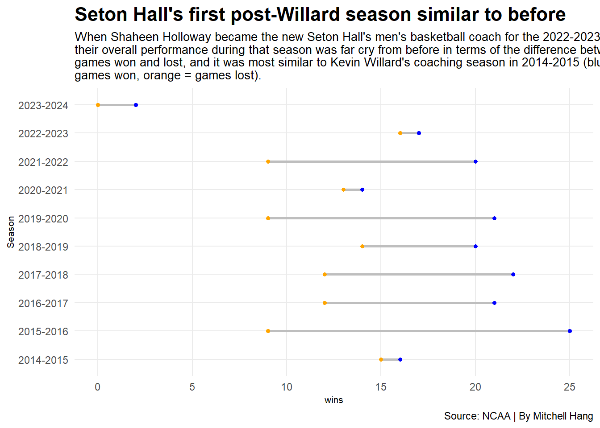
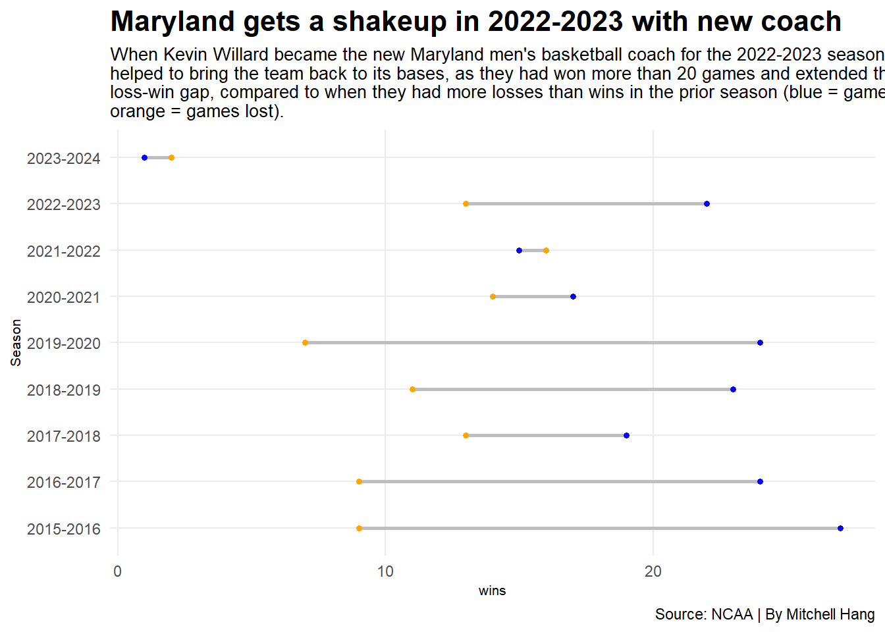

Code
library(tidyverse)
library(ggalt)Mitchell Hang
November 14, 2023
Here I am loading the required functions and logs.
Warning: One or more parsing issues, call `problems()` on your data frame for details,
e.g.:
dat <- vroom(...)
problems(dat)Rows: 98113 Columns: 50
── Column specification ────────────────────────────────────────────────────────
Delimiter: ","
chr (8): Season, TeamFull, Opponent, HomeAway, W_L, URL, Conference, Team
dbl (39): Game, TeamScore, OpponentScore, TeamFG, TeamFGA, TeamFGPCT, Team3...
lgl (2): Blank, season
date (1): Date
ℹ Use `spec()` to retrieve the full column specification for this data.
ℹ Specify the column types or set `show_col_types = FALSE` to quiet this message.=====
Here I am creating separate databases which tally the games won by Seton Hall and Maryland, as well as grouping them by season.
seton_hall_games <- ncaa_logs |>
filter(TeamFull == "Seton Hall Pirates") |>
mutate(
win = case_when(
grepl("W", W_L) ~ 1,
grepl("L", W_L) ~ 0),
loss = case_when(
grepl("W", W_L) ~ 0,
grepl("L", W_L) ~ 1)
)
maryland_games <- ncaa_logs |>
filter(TeamFull == "Maryland Terrapins") |>
mutate(
win = case_when(
grepl("W", W_L) ~ 1,
grepl("L", W_L) ~ 0),
loss = case_when(
grepl("W", W_L) ~ 0,
grepl("L", W_L) ~ 1)
)=====
Here I am creating graphs that show the wins and losses by Seton Hall and Maryland from each season (keeping in mind that 2023-2024 is still in progress), as to give a brief idea of the teams’ overall standing.
ggplot() +
geom_dumbbell(
data=seton_hall_games_wins,
aes(y=Season, x=wins, xend=losses),
linewidth = 1,
size=1,
color = "grey",
colour_x = "blue",
colour_xend = "orange") +
theme_minimal() +
labs(title="Seton Hall's first post-Willard season similar to before", subtitle="When Shaheen Holloway became the new Seton Hall's men's basketball coach for the 2022-2023 season, \ntheir overall performance during that season was far cry from before in terms of the difference between \ngames won and lost, and it was most similar to Kevin Willard's coaching season in 2014-2015 (blue = \ngames won, orange = games lost).", caption="Source: NCAA | By Mitchell Hang") + theme_minimal() +
theme(
plot.title = element_text(size = 16, face = "bold"),
axis.title = element_text(size = 8),
plot.subtitle = element_text(size=10),
panel.grid.minor = element_blank()
)Warning in geom_dumbbell(data = seton_hall_games_wins, aes(y = Season, x =
wins, : Ignoring unknown parameters: `linewidth`Warning: Using the `size` aesthetic with geom_segment was deprecated in ggplot2 3.4.0.
ℹ Please use the `linewidth` aesthetic instead.
Seton Hall’s most recent season performance after Kevin Willard left proved to be somewhat troubling, as the number of losses started catching up to the number of wins, especially compared to most seasons (including the prior one) where wins had a growing distance over losses. In fact, the performance seemed most identical to some of Willard’s earlier coaching seasons, particulalry 2014-2015 and 2020-2021 (although the latter could be excused as that was when people were returning to play and witness games during the COVID-19 pandemic).
ggplot() +
geom_dumbbell(
data=maryland_games_wins,
aes(y=Season, x=wins, xend=losses),
linewidth = 1,
size=1,
color = "grey",
colour_x = "blue",
colour_xend = "orange") +
theme_minimal() +
labs(title="Maryland gets a shakeup in 2022-2023 with new coach", subtitle="When Kevin Willard became the new Maryland men's basketball coach for the 2022-2023 season, he \nhelped to bring the team back to its bases, as they had won more than 20 games and extended their \nloss-win gap, compared to when they had more losses than wins in the prior season (blue = games won, \norange = games lost).", caption="Source: NCAA | By Mitchell Hang") + theme_minimal() +
theme(
plot.title = element_text(size = 16, face = "bold"),
axis.title = element_text(size = 8),
plot.subtitle = element_text(size=10),
panel.grid.minor = element_blank()
)Warning in geom_dumbbell(data = maryland_games_wins, aes(y = Season, x = wins,
: Ignoring unknown parameters: `linewidth`
Here, we can see that Maryland starts to have a reversal after the 2021-2022 season, as Willard managed to produce a performance with more wins than losses, and a relatively wide loss-win gap. Excluding 2023-2024, Maryland only had one season in which they had more losses than wins over the past few years, whereas Seton Hall had at leas three, showing that Willard can easily slip into continuing a team’s consistent performance.
=====
Here I am calculating Z-scores as an overall metric of Seton Hall and Maryland’s team performances over the past few seasons.
seton_hall_games_stats <- seton_hall_games |>
group_by(Season) |>
summarise(
avgTeamFG = mean(TeamFG),
avgTeam3P = mean(Team3P),
avgTeamFT = mean(TeamFT),
avgOpponentFG = mean(OpponentFG),
avgOpponent3P = mean(Opponent3P),
avgOpponentFT = mean(OpponentFT),
) |> na.omit()
seton_hall_games_stats_zscore <- seton_hall_games_stats |>
mutate(
TeamFGZscore = as.numeric(scale(avgTeamFG, center = TRUE, scale = TRUE)),
Team3PZscore = as.numeric(scale(avgTeam3P, center = TRUE, scale = TRUE)),
TeamFTZscore = as.numeric(scale(avgTeamFT, center = TRUE, scale = TRUE)),
OpponentFGZscore = as.numeric(scale(avgOpponentFG, center = TRUE, scale = TRUE)) * -1,
Opponent3PZscore = as.numeric(scale(avgOpponent3P, center = TRUE, scale = TRUE)) * -1,
OpponentFTZscore = as.numeric(scale(avgOpponentFT, center = TRUE, scale = TRUE)) * -1,
TotalZscore = TeamFGZscore + Team3PZscore + TeamFTZscore + OpponentFGZscore + Opponent3PZscore + OpponentFTZscore
)
seton_hall_games_stats_zscore |> arrange(desc(TotalZscore))# A tibble: 10 × 14
Season avgTeamFG avgTeam3P avgTeamFT avgOpponentFG avgOpponent3P
<chr> <dbl> <dbl> <dbl> <dbl> <dbl>
1 2023-2024 26.5 5.5 19 19.5 6.5
2 2021-2022 25.9 7.34 15.0 24 6.28
3 2019-2020 26.1 7.93 14.6 23.9 6.57
4 2017-2018 28.6 7.35 15.0 26.6 7.71
5 2015-2016 26.2 6.06 15.6 23.9 6.24
6 2022-2023 23.8 5.76 15.1 23.1 6.52
7 2020-2021 24.9 6.67 14.7 25.2 7.33
8 2014-2015 23.7 6.87 14.1 24.3 5.39
9 2016-2017 26.4 6.12 14.3 24.6 6.48
10 2018-2019 26.1 7.06 14.5 24.9 7.94
# ℹ 8 more variables: avgOpponentFT <dbl>, TeamFGZscore <dbl>,
# Team3PZscore <dbl>, TeamFTZscore <dbl>, OpponentFGZscore <dbl>,
# Opponent3PZscore <dbl>, OpponentFTZscore <dbl>, TotalZscore <dbl>During his time coaching at Seton Hall, Kevin Willard managed to drum up a consistent performance for his team in terms of overall field goals, three-pointers and free throws, leading to a relative improvement as each season passes. His last season in 2021-2022 proved to be his most formidable, and if we take a look at Seton Hall’s first season without Willard (2022-2023), we can see that the performance was much lesser than before, in regards to field goals, three pointers and free throws made. In fact, their performance was much closer to 2020-2021, as people were beginning to get back into sports amidst the COVID-19 pandemic. In addition, Seton Hall’s first three games of the 2023-2024 season show signs of them growing much stronger than before.
maryland_games_stats <- maryland_games |>
group_by(Season) |>
summarise(
avgTeamFG = mean(TeamFG),
avgTeam3P = mean(Team3P),
avgTeamFT = mean(TeamFT),
avgOpponentFG = mean(OpponentFG),
avgOpponent3P = mean(Opponent3P),
avgOpponentFT = mean(OpponentFT),
) |> na.omit()
maryland_games_stats_zscore <- maryland_games_stats |>
mutate(
TeamFGZscore = as.numeric(scale(avgTeamFG, center = TRUE, scale = TRUE)),
Team3PZscore = as.numeric(scale(avgTeam3P, center = TRUE, scale = TRUE)),
TeamFTZscore = as.numeric(scale(avgTeamFT, center = TRUE, scale = TRUE)),
OpponentFGZscore = as.numeric(scale(avgOpponentFG, center = TRUE, scale = TRUE)) * -1,
Opponent3PZscore = as.numeric(scale(avgOpponent3P, center = TRUE, scale = TRUE)) * -1,
OpponentFTZscore = as.numeric(scale(avgOpponentFT, center = TRUE, scale = TRUE)) * -1,
TotalZscore = TeamFGZscore + Team3PZscore + TeamFTZscore + OpponentFGZscore + Opponent3PZscore + OpponentFTZscore
)
maryland_games_stats_zscore |> arrange(desc(TotalZscore))# A tibble: 9 × 14
Season avgTeamFG avgTeam3P avgTeamFT avgOpponentFG avgOpponent3P avgOpponentFT
<chr> <dbl> <dbl> <dbl> <dbl> <dbl> <dbl>
1 2015-… 26.2 7.42 15.9 24.3 6.67 11.4
2 2019-… 24 7.68 16.1 23.6 7.32 10
3 2016-… 25.1 8.24 15.5 24.2 6.42 13.3
4 2017-… 25.3 7.16 15.2 24.4 7.62 10.4
5 2022-… 24.6 6.66 13.8 23.3 5.63 11.3
6 2018-… 25.2 7.26 13.7 23.4 7.41 11.4
7 2020-… 24.3 8.16 12.1 23.5 8.26 10.3
8 2023-… 22 4.67 15.3 21.3 3.67 14.7
9 2021-… 24.7 6.84 14.7 25.8 8.23 10.8
# ℹ 7 more variables: TeamFGZscore <dbl>, Team3PZscore <dbl>,
# TeamFTZscore <dbl>, OpponentFGZscore <dbl>, Opponent3PZscore <dbl>,
# OpponentFTZscore <dbl>, TotalZscore <dbl>Maryland’s first season under Willard (2022-2023) proved to be relatively normal/neutral, as it fell more in line with their performances from 2017-2018 and 2018-2019. Prior to that, the 2015-2016 season was Maryland’s best performance thus far, with the team slowly experiencing a downturn with each coming season. However, Maryland’s first three games of the 2023-2024 season are shown to be worse than initially expected, as it has gotten as low as their performance in the 2021-2022 season, right before Willard became the coach, so it’s worth looking out for any signs of improvement as the current season progresses.
Brendan Balsamo wrote in his article for The Setonian titled “The Seton Hall Legacy of Kevin Willard,” in which he said, “Under Willard, the program transformed from the butt of a Big East-wide joke, to a perennial conference title contender and a recurring player in March Madness.” From our analysis, it’s clear to see that Willard has already been made a welcome member of Maryland after years of bringing Seton Hall to stardom, but the current season does not hint at any good signs of a more consistent performance, and only time will tell if this season’s performance will be just as good as the last one, and perhaps many others before.